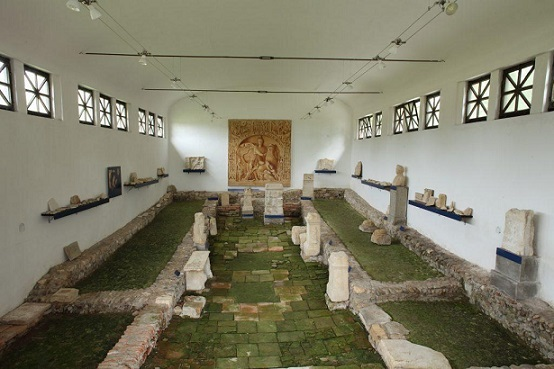

|
ESLOVENIA
La actual Eslovenia fue conquistada en el año 16. El actual territorio Eslovaco formaba parte en época romana de las provincias de Noricum, Dalmatia, Italia y Pannonia. Destacamos: En Celje
los restos de la antigua ciudad romana. La población celta de Kelea pasó
a dominio romano como Celeia en el 15 a.e.c., se anexionó del reino de
Noricum. Con el emperador Claudio, se convirtió en el municipium Claudia
Celeia. De época romana podemos ver en el Museo Regional de Celje
una colección lapidaria romana. Ljubljana
un fuerte romano que formaba parte del Claustra Alpium Iuliarum. La
ciudad surgió como campamento militar romano de la Legio XV Apollinaris
a mediados del siglo I a.e.c. La ciudad romana de Emona (siglos I al V)
ocupaba una parte importante del centro actual de Liubliana.
Actualmente, los amantes de la historia pueden visitar la sección bien
conservada del muro meridional de la ciudad y dos parques arqueológicos.
También se exponen objetos de la época romana en el Museo de la Ciudad
de Liubliana y en el Museo Nacional de Eslovenia. La ciudad y campamento militar de Poetovio. El Parque Arqueológico de Poetovio cuenta la historia del patrimonio de la antigua Ptuj, el asentamiento romano más grande en territorio esloveno. En Ptuj se han descubierto cinco santuarios dedicados al dios Mitra. Hoy en día es posible ver los cimientos, altares, bajorrelieves y otros elementos de culto en los Mitras I y III, santuarios romanos de los siglos II y III. Más info: visit ptuj

La necrópolis romana de Sempeter. Por aquí pasaba la calzada romana, relacionada con la Ruta del ámbar, que comunicaba Aquileia con Emona (Ljubljana), Celeia (Celje) y Poetovio (Ptuj).
|